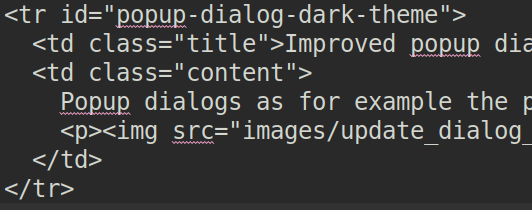
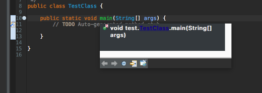
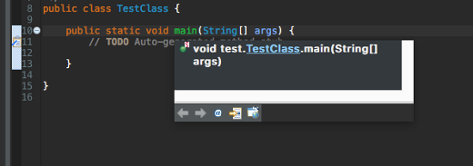

Instructions
The title should be short and snappy, written in sentence case, and using "headlinese" (compressed style). The title should not use trailing punctuation, and the <tr> XHTML element needs a unique id attribute (value is all-lowercase and hyphen-separated).
In the news description, tell users about changes they'll see in the UI. Tell component writers about changes they'll see at the client- and server-side APIs. Try to generate some excitement; save the boring details for the manual; be short and don't repeat yourself. The description should be complete sentences, with trailing punctuation.
Make the entry self-contained and mention API classes. Do not link to bugs and don't promote individuals or third-party products.
Use active voice (say "you", not "the user"), and follow other advice in the Topic Content section of the Eclipse Doc Style Guidelines.
Stick to the default font and size. Make command names (Quick Fix),
keyboard shortcuts (Ctrl+1), and preference page paths
(Preferences > General > Keys) bold (using <b>).
Avoid other emphasis markup, but prefer <b>
over <em> if you have to use one.
Do not enclose the first paragraph of an item in <p></p> tags.
Later in the entry, prefer <p> over <br/>.
To break up very long <code> tags that don't contain whitespace for automatic word-wrap,
consider inserting <span style="visibility:hidden">­</span> at strategic positions.
See entries in published news documents for correct examples. These published news entries have been already reviewed, while entries in the evolving document may still contain errors.
The Windows Snipping Tool actually saves to PNG on Windows 7 and can easily be used to crop and save screenshots:
- Arrange the windows for the shot
- Use the Windows Snipping Tool to capture part of the screen
- Use File > Save As to save the screenshot as a PNG
- Overlays such as red circles or boxes to call out details can be done using Microsoft Paint
Name the file in a way that is appropriate and specific to the item (e.g., key-bindings.png, rather than something generic like image.png). Use all lowercase letters in the image file name, including the ".png" file extension. As a separator, use hyphen "-" rather than underscore, space, or whatnot. The item's id is often a good choice for an image name.
Put all the images in a sibling directory named "images".
This gives XHTML like:
<img src="images/foo-view.png" alt=""/>
Include a suitable alt attribute.
The alt text should be empty ("") if the image just illustrates the text.
Only use the alt text to add information that is not accessible if the page is rendered without images.
Don't write alt="Screenshot of the XY dialog".
Blind users shouldn't have to skip useless repetitions, but e.g. a field label can be
interesting unless it's already part of the description.
If the alt attribute text cannot sufficiently replace the image contents
(e.g. for a screenshot that shows source code), then enclose the img element in a link
to a plain ".txt" file with the same name as the image:
<a href="images/foo-view.txt"><img ...
The images should be left-justified (as opposed to centered). Do not embed the width and height of the image.


Before:
After:



Under some safe circumstances, the workspace can chose to build independent projects in parallel. In such
case, this preference controls the maximum amount of jobs/threads that will be running builds in parallel. A value of
1 indicates that build won't be parallelized and keep the legacy behavior.
The optimal value depends on your machine and workspace projects specificities. We do recommend to try relatively
low values (such as 4) first which already allow to save time, when projects allow it, while not risking to
overload your CPU.

@NonNull:
-
@NonNullByDefaultannotations based onDefaultLocationcan be also used if the primary nullness annotations are declaration annotations. -
Support for
@NonNullByDefaultannotations that are targeted at parameters has been implemented. -
Multiple different
@NonNullByDefaultannotations (especially with different default values) may be placed at the same target, in which the sets of locations are merged. -
Annotations which use an annotation
@TypeQualifierDefaultinstead of aDefaultLocation-based value are understood, e.g.@org.springframework.lang.NonNullApi.

Before:

After:

Before:
After:

For example, the Align descriptions, grouped by type setting is now used in the built-in Eclipse profile.

The setting previously known as Indent Javadoc tags is now called Align descriptions to tag width. The two settings related to @param tags also had their labels changed to better describe what they do.
.target file source editors contains a new Update IU Versions from Repositories command to update the version attribute of all units to the newest available version.
Before:

After:

.target file source editors have been updated to be more legible in the dark theme.
Before:

After:

- InjectionException: When using the ContextInjectionFactory to manually trigger dependency injection, all methods eventually throw an InjectionException. By making org.eclipse.e4.core.di API, this InjectionException becomes API, too and can therefore be processed properly.
- IInjector: To manually trigger dependency injection on a more fine-grained level, e.g. without using the IEclipseContext as an ObjectSupplier.
- InjectorFactory: To create an instance of IInjector.
A snippet to demonstrate can be found Snippet370 .

IWorkspaceDescription has received a new API method setMaxConcurrentBuilds(int n)
which allows to configure throttling of how many threads/jobs will be used in case workspace can
build independent projects in parallel.
At the moment, parallel builds with happen when under safe circumstances, depending on the scheduling rules involved
in IncrementalProjectBuilder.getRule(). Having all builders specifying a "relaxed" scheduling rule (not
containing workspace root) is a requirement for paralllel builds to happen. As such, to take advantage of parallel
builds, consider refining the implementation of getRule() in your builders.
Passing a value of 1 to setMaxConcurrentBuilds(int n) will disable the parallel builds
in general, and will make workspace build behave as it's used to, building projects sequentially. This it still the
default value and behavior, so it makes parallel builds of independent project an opt-in feature so far.
The optimal value for throttling depends on your machine and workspace projects specificities. We do recommend to try relatively
low values (such as 4) first which already allow to save time, when projects allow it, while not risking to
overload your CPU.
[NOTE: 4.8 M6 N and N ENTRY - **** DONOT DELETE ***]
IBinding#getJavaElement() now
accommodates recovered packages in which case a null may be
returned for such problem package bindings. Pre-Java 9 compliant code
will continue to have a non-null return value for this api for packages.